18/09/2024 — Điện tâm đồ OMI động. Troponin âm tính và chụp mạch vành âm tính không loại trừ thiếu máu cục bộ cơ tim hay hội chứng vành cấp (ACS).
Bản dịch tiếng Việt của bài "Dynamic OMI ECG. Negative trops and negative angiogram does not rule out coronary ischemia or ACS." – Dr. Smith’s ECG Blog. Giữ nguyên toàn bộ 13 hình ảnh của bản gốc.
Bởi Smith, được bình duyệt bởi bác sĩ tim mạch can thiệp Emre Aslanger
Người gửi: ẩn danh
Một nam giới 53 tuổi đến khoa cấp cứu (ED) lúc 6:45 sáng vì cảm giác đè nặng âm ỉ ở ngực trái, khiến ông thức giấc lúc 3 giờ sáng. Cơn đau lan lên cả hai vai. Ông đến khoa cấp cứu vào khoảng 6:45 sáng và cho biết cơn đau vẫn kéo dài. Trong những tuần gần đây ông có những cơn đau tương tự xảy ra lúc nghỉ, nhưng thường tự hết sau khoảng một giờ. Lần này cơn đau không hết. Không có triệu chứng nào khác. Ông mới được chẩn đoán thuyên tắc phổi (PE) và đã không dùng thuốc chống đông vì chi phí.
Đây là điện tâm đồ của ông tại khoa cấp cứu lúc phân loại (triage):

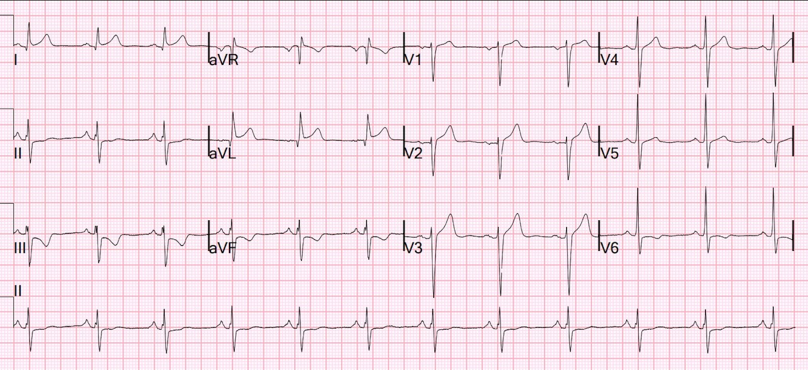
Nhồi máu cơ tim do tắc (OMI) vùng bên cao rõ ràng, nhưng chưa hẳn đạt tiêu chuẩn STEMI.
Ông có một điện tâm đồ cũ lưu trong hồ sơ:

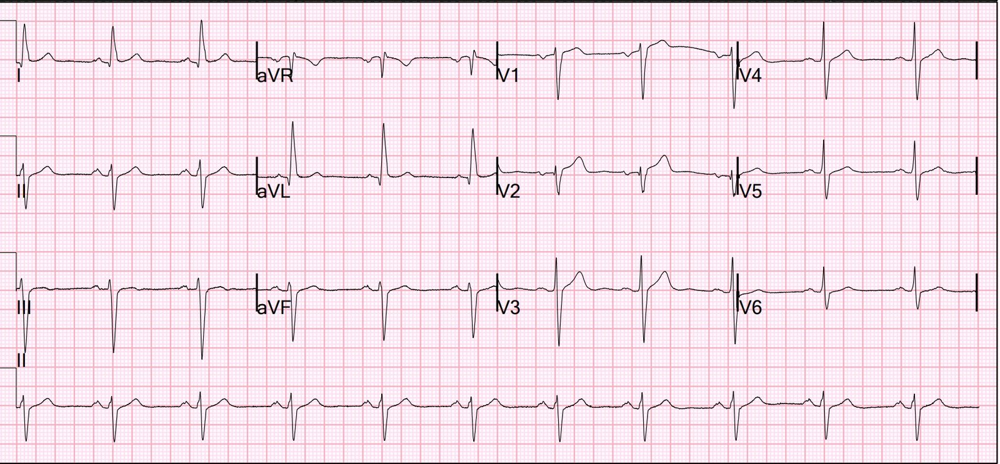
Chứng tỏ các dấu hiệu này là mới
Phòng thông tim (cath lab) đã được kích hoạt.
Bệnh nhân được cho dùng aspirin và nitroglycerin ngậm dưới lưỡi, và hết đau. Bệnh nhân được bắt đầu truyền nitroglycerin tĩnh mạch liên tục (nitro gtt). Huyết áp ban đầu khoảng 160/90 mmHg, SpO2 95% khi thở khí trời. Siêu âm tim tại giường không thấy rối loạn vận động thành rõ ràng. Bác sĩ chuyên khoa tim mạch đang đào tạo (fellow) đồng ý với kế hoạch thông tim cấp cứu và đã đưa bệnh nhân đến phòng thông tim.
Một điện tâm đồ khác được ghi sau khi dùng nitroglycerin, lúc này bệnh nhân đã hết đau:

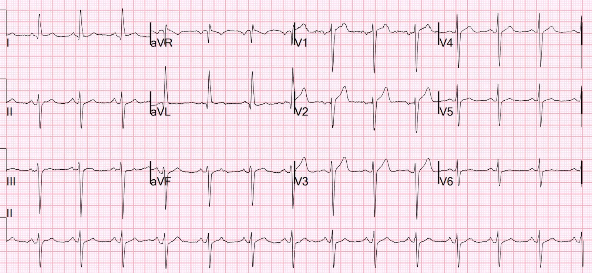
Tất cả các dấu hiệu đã hết.
Điều này xác nhận rằng cơn đau là do thiếu máu cục bộ và nay đã hết.
Troponin I độ nhạy cao (hs-troponin I) ban đầu trả kết quả < 3 ng/L.
Troponin lúc 6 giờ cũng < 3 ng/L.
Chụp mạch vành:
Mảng xơ vữa mạch vành mức độ nhẹ
Không có bệnh động mạch vành tắc nghẽn đáng kể, mảng xơ vữa bị vỡ hay tắc mạch vành cấp nào để giải thích cơn đau ngực và các bất thường điện tâm đồ của bệnh nhân
Siêu âm tim:
Phân suất tống máu thất trái ước tính là 59%.
Không phát hiện rối loạn vận động thành thất trái.
Đây là một đoạn trích từ hồ sơ bệnh án:
“Trong bối cảnh troponin I độ nhạy cao không phát hiện được sau hơn 3 giờ kể từ lúc khởi phát khó chịu ở ngực, sẽ cân nhắc các nguyên nhân ngoài tim gây ra triệu chứng của bệnh nhân. Do không có bằng chứng khách quan về tổn thương cơ tim và thiếu máu cục bộ, rất ít khả năng đau ngực là do nguyên nhân tim.”
_________
Tôi không đồng ý với nhận định này, và BS. Aslanger cũng vậy. Cho đến khi được chứng minh ngược lại bằng siêu âm trong lòng mạch (IVUS) hoặc chụp cắt lớp quang học (OCT), đây là một ca đau thắt ngực không ổn định trong kỷ nguyên troponin độ nhạy cao.
Chúng tôi đã viết bài báo này: Sandoval Y. Apple FS. Smith SW. High-sensitivity cardiac troponin assays and unstable angina. Toàn văn tại đây.
Nếu troponin tăng, có tăng và/hoặc giảm, thì đây sẽ là nhồi máu cơ tim với động mạch vành không tắc nghẽn (MINOCA). Theo những gì tôi biết, đã không thực hiện nghiệm pháp kích thích mạch vành nào để đánh giá co thắt. Về mảng xơ vữa bị vỡ, ai cũng biết rằng phần lớn các mảng xơ vữa bị vỡ xảy ra ở những động mạch KHÔNG có bất kỳ chỗ hẹp đáng kể nào từ trước. Gần đây tôi đã đăng ca bệnh dưới đây của Willy Frick, một ca hội chứng vành cấp (ACS) rõ ràng nhưng chỉ còn hẹp tồn lưu tối thiểu, và nó đã khơi lên một cuộc thảo luận rất thú vị trên Twitter ở bên dưới. Gregg Stone, một nhà nghiên cứu tim mạch can thiệp rất nổi tiếng, thậm chí cũng góp ý kiến.
Phần lớn mảng xơ vữa nằm NGOÀI LÒNG MẠCH!! Không thể thấy nó trên chụp mạch vành, vốn chỉ là hình chụp lòng mạch (lumenogram). Kỹ thuật tốt nhất để đánh giá mảng xơ vữa bị vỡ là chụp cắt lớp quang học (OCT) trong lòng mạch vành. Siêu âm trong lòng mạch (IVUS) cũng rất hữu ích. Theo những gì tôi biết, cả IVUS lẫn OCT đều không được thực hiện ở ca này.
Điện tâm đồ và cơn đau ngực đã rõ ràng: đây là thiếu máu cục bộ cấp. Sự kết hợp giữa cường độ và thời gian thiếu máu cục bộ chưa đủ lớn để làm tăng troponin. Các nghiên cứu về troponin cho thấy rõ troponin có độ nhạy gần 100% đối với ACS, nhưng KHÔNG phải 100%. Thực tế, trong gần như tất cả các nghiên cứu về troponin, một bệnh nhân có điện tâm đồ như thế này sẽ bị loại ra khỏi nghiên cứu.
Điều cốt lõi, Những điểm cần học:
1. Chụp mạch vành âm tính không loại trừ hội chứng vành cấp
2. Troponin không phát hiện được không loại trừ hội chứng vành cấp
3. Đau thắt ngực không ổn định vẫn tồn tại trong kỷ nguyên troponin độ nhạy cao
4. Bạn phải theo đuổi đến cùng các dấu hiệu điện tâm đồ có giá trị chẩn đoán. Hãy dùng IVUS hoặc OCT. (MRI sẽ không dương tính nếu troponin không tăng)
5. Tìm ra bệnh mạch vành không tắc nghẽn quan trọng đến mức nào? Can thiệp không phải là cách điều trị duy nhất. Điều trị nội khoa, đặc biệt là statin và aspirin, rất quan trọng ở một bệnh nhân như thế này. (Ông có được dùng statin, nhưng KHÔNG được đưa ra chẩn đoán)
6. Đừng bỏ qua các dấu hiệu điện tâm đồ quan trọng!! Chúng có thể là manh mối duy nhất để bạn tiếp tục thăm dò thêm!!
Sơ đồ: Mảng xơ vữa ngoài lòng mạch lớn mà không có chút mảng xơ vữa nào trong lòng mạch

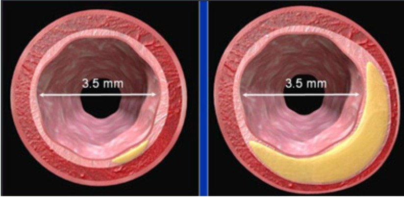

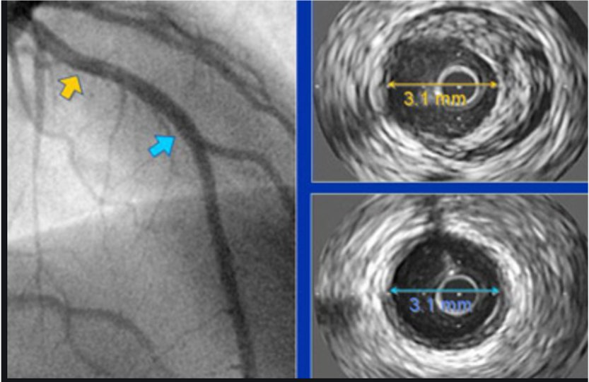
Chụp mạch vành bình thường, nhưng IVUS cho thấy mảng xơ vữa đáng kể
Xem cuộc thảo luận trên Twitter dưới đây, đoạn trích từ bài báo kinh điển trên Circulation, và chính bài báo đó.
Đây là ca bệnh của Willy đã khởi đầu cuộc thảo luận:
“The dye don’t lie” …except when it does. Angiogram Negative, or is it? (“Thuốc cản quang không nói dối” …trừ khi nó nói dối. Chụp mạch vành âm tính, thật vậy chăng?)

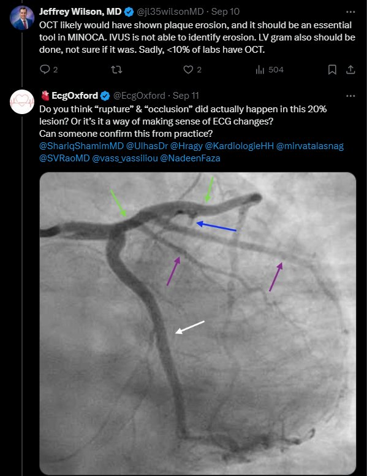

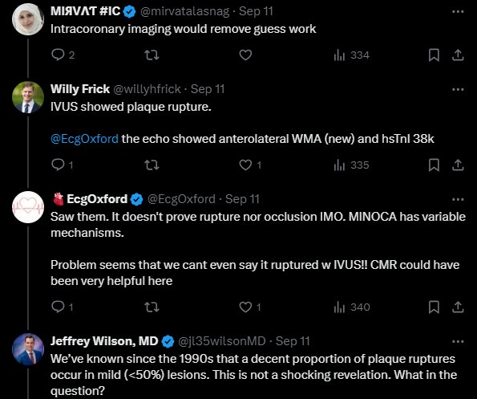

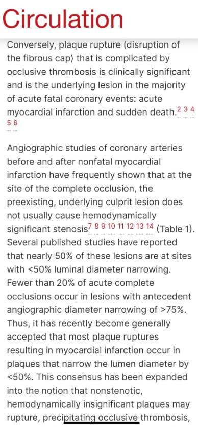
(Xem toàn văn và tài liệu tham khảo bên dưới)

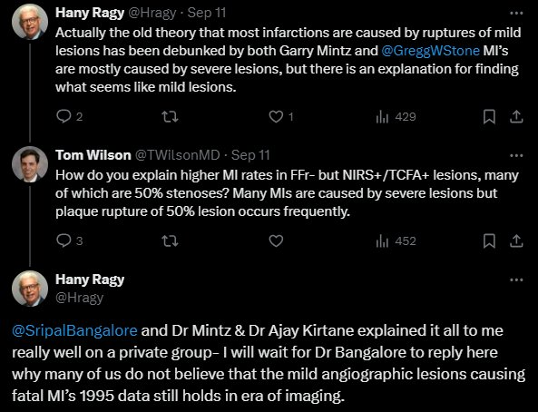

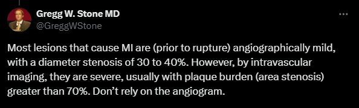

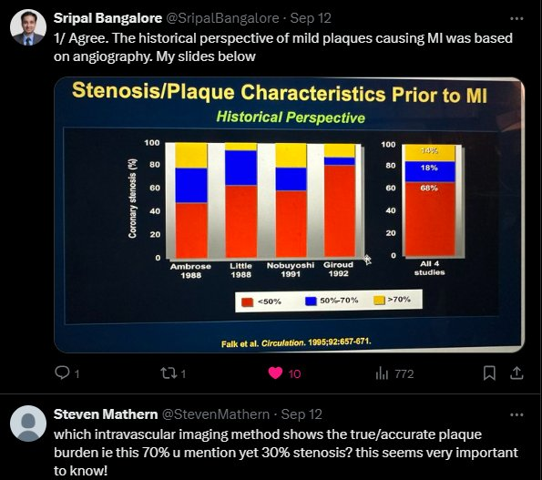
How Big Are Coronary Atherosclerotic Plaques That Rupture? (Các mảng xơ vữa động mạch vành bị vỡ lớn đến mức nào?)
https://www.ahajournals.org/doi/full/10.1161/01.CIR.94.10.2662 (toàn văn bài báo trên Circulation: Các mảng xơ vữa động mạch vành bị vỡ lớn đến mức nào?)
Mòn mảng xơ vữa (tổn thương nội mạc nông) và nứt mảng xơ vữa (vết rách có độ sâu khác nhau) kèm huyết khối thành vi thể phủ bên trên là những bất thường thường gặp ở bề mặt nội mạc của các mảng xơ vữa động mạch vành. Davies và cs.1 nhận thấy các vết nứt mảng xơ vữa nhỏ ở tới 17% bệnh nhân tử vong vì nguyên nhân ngoài tim. Nếu không hình thành huyết khối gây tắc nghẽn lòng mạch phủ bên trên, những khiếm khuyết mảng xơ vữa nhỏ này sẽ không gây ra biến cố lâm sàng nào. Ngược lại, vỡ mảng xơ vữa (phá vỡ vỏ xơ) có biến chứng huyết khối gây tắc thì có ý nghĩa lâm sàng và là tổn thương nền trong phần lớn các biến cố mạch vành cấp gây tử vong: nhồi máu cơ tim cấp và đột tử.2 3 4 5 6
Các nghiên cứu chụp mạch vành trước và sau nhồi máu cơ tim không tử vong thường cho thấy rằng tại vị trí tắc hoàn toàn, tổn thương thủ phạm nền có từ trước thường không gây hẹp có ý nghĩa huyết động7 8 9 10 11 12 13 14 (Bảng 1). Một số nghiên cứu đã công bố báo cáo rằng gần 50% các tổn thương này nằm ở vị trí có hẹp đường kính lòng mạch <50%. Dưới 20% các trường hợp tắc hoàn toàn cấp xảy ra ở những tổn thương trước đó có hẹp đường kính trên chụp mạch >75%. Vì vậy, gần đây người ta đã chấp nhận rộng rãi rằng phần lớn các trường hợp vỡ mảng xơ vữa dẫn đến nhồi máu cơ tim xảy ra ở những mảng làm hẹp đường kính lòng mạch <50%. Sự đồng thuận này đã được mở rộng thành quan niệm rằng các mảng xơ vữa không gây hẹp, không có ý nghĩa huyết động cũng có thể vỡ, khởi phát huyết khối gây tắc, nhồi máu cơ tim và/hoặc tử vong. Đây là một khái niệm gây nản lòng. Nó gợi ý rằng hầu như mọi người đàn ông và phụ nữ trưởng thành ở thế giới công nghiệp hóa đều mang một nguy cơ thường trực và không thể dự đoán về một biến cố mạch vành thảm khốc.
Ngược lại, các nghiên cứu mô bệnh học ở bệnh nhân có biến cố mạch vành gây tử vong đã liên tục cho thấy rằng tại các vị trí vỡ mảng xơ vữa có huyết khối gây tắc chồng lên, tổn thương nền là “nặng” (Bảng 2, Hình 1). Các nghiên cứu dùng phép đo diện tích (planimetry) để đo mảng xơ vữa đã xác định rằng trung bình mảng xơ vữa chiếm ≈90% diện tích cắt ngang (giảm 68% đường kính).2 3 4 5 Các nghiên cứu này không dùng phương pháp cố định các động mạch vành dưới áp lực.
Làm thế nào để dung hòa hai bộ dữ liệu nhất quán, đáng tin cậy nhưng dường như khác nhau đến vậy? Thông thường, khi có sự khác biệt quan điểm nhất quán như vậy, điều đó có nghĩa là hoặc mọi người đều sai, hoặc mọi người đều đúng một phần. Trong trường hợp này, khi so sánh chụp mạch và giải phẫu bệnh, sự khác biệt nảy sinh vì hai kỹ thuật không đo cùng một thứ: đúng như câu nói “so sánh táo với cam”.
Cả khảo sát chụp mạch (Bảng 3) lẫn khảo sát giải phẫu bệnh (Bảng 4) đều có những hạn chế có thể dẫn đến kết quả sai, gây đánh giá quá cao hoặc quá thấp mức độ hẹp lòng mạch do mảng xơ vữa.15 16 17 18 19 20 21 22 23 24 25 Mặc dù những hạn chế này là quan trọng, chúng tôi cho rằng các yếu tố quan trọng nhất gây ra sự bất tương hợp lâu nay giữa các nghiên cứu chụp mạch và giải phẫu bệnh không liên quan đến kỹ thuật kém hay diễn giải thiếu chính xác, mà là hai biến số sinh học khiến cho ngay cả việc cố so sánh hai kỹ thuật này cũng trở nên phi lý.
Hai yếu tố quan trọng nhất để hiểu sự bất tương hợp giữa chụp mạch và giải phẫu bệnh là (1) tính lan tỏa của xơ vữa động mạch vành và (2) tái cấu trúc mạch máu đi kèm với sự tiến triển của xơ vữa động mạch.
Bản chất lan tỏa của xơ vữa động mạch vành đã được các nhà giải phẫu bệnh,26 27 28 29 30 các bác sĩ chụp mạch,31 và gần đây hơn là các nhà siêu âm mạch vành32 33 biết rõ, nhưng dường như nó lại bị bỏ qua khi đánh giá thường quy các phim chụp mạch vành. Ở những người mắc bệnh động mạch vành do xơ vữa, hầu như không thể tìm thấy một đoạn nào của cây động mạch vành đoạn gần không bị xơ vữa ở một mức độ nào đó. Vì vậy, khái niệm hẹp khu trú do một “mảng xơ vữa” là gây hiểu lầm. Mảng xơ vữa quan sát được không phải là một tổn thương riêng rẽ mà chỉ là một vùng bị tổn thương nặng hơn của một quá trình lan tỏa, rộng khắp.
Tầm quan trọng của tái cấu trúc mạch máu, được làm sáng tỏ chủ yếu nhờ công trình của Glagov và cộng sự34 cùng những tác giả khác,35 36 37 chỉ mới bắt đầu được đánh giá đúng gần đây. Hiện tượng này, nay thường được gọi là hiện tượng Glagov, là sự gia tăng bù trừ, tiến triển của diện tích cắt ngang động mạch khi các mảng xơ vữa lớn dần. Thực chất, khi mảng xơ vữa phát triển, kích thước lòng mạch vẫn giữ nguyên. Vì vậy, kích thước lòng mạch có thể vẫn bình thường dù mảng xơ vữa đã chiếm ≈40% diện tích cắt ngang mới của động mạch. Theo khái niệm của Glagov, chỉ khi mảng xơ vữa tiếp tục lớn thêm thì kích thước lòng mạch mới bị ảnh hưởng.
Vậy tính lan tỏa của xơ vữa động mạch vành và tái cấu trúc mạch máu ảnh hưởng thế nào đến việc định lượng xơ vữa động mạch vành bằng chụp mạch và bằng giải phẫu bệnh? Như trình bày ở Hình 2, mức độ hẹp xác định trên chụp mạch phụ thuộc vào việc so sánh đường kính lòng mạch tại vị trí hẹp với một vị trí kế cận được cho là bình thường. Vì không có vị trí bình thường nào kế cận các vùng hẹp ở động mạch vành bị xơ vữa, chụp mạch thực chất sẽ so sánh một chỗ hẹp nặng với một chỗ hẹp nhẹ hoặc vừa, và do đó sẽ đánh giá thấp khối lượng bệnh tại vị trí hẹp, như Mann và Davies đã chứng minh gần đây.38 Do sự giãn rộng bù trừ, một đoạn mạch có ≤40% diện tích cắt ngang bị mảng xơ vữa chiếm vẫn có thể có lòng mạch với kích thước và hình dạng bình thường. Do đó, đến khi chụp mạch phát hiện được một tổn thương, >40% diện tích cắt ngang động mạch có thể đã bị mảng xơ vữa chiếm. Vì vậy, chụp mạch có thể khá chính xác trong việc xác định kích thước lòng mạch, nhưng sẽ không phát hiện được “khối lượng” xơ vữa hiện có. Nếu đoạn kế cận có hẹp lòng mạch nhẹ, mức độ hẹp lòng động mạch so với một động mạch hoàn toàn bình thường cũng sẽ bị đánh giá thấp.
Ngược lại, đánh giá giải phẫu bệnh, như minh họa ở Hình 2, sẽ xác định đúng tỷ lệ phần trăm diện tích cắt ngang bị mảng xơ vữa chiếm chỗ. Ví dụ, nhà giải phẫu bệnh có thể thấy một mảng xơ vữa chiếm 50% diện tích cắt ngang. Tuy nhiên, do hiện tượng Glagov, diện tích cắt ngang của động mạch có thể đã to ra 50%. Như vậy, lòng mạch quan sát được thực ra có thể vẫn có kích thước bằng lòng mạch bình thường ban đầu. Vì nhà giải phẫu bệnh không biết diện tích cắt ngang ban đầu của động mạch, cũng như mức độ to ra bù trừ của động mạch, khi chỉ đánh giá một lát cắt ngang duy nhất tại vị trí hẹp, nên không thể xác định mức độ hẹp lòng mạch của đoạn đó. Vì nhà giải phẫu bệnh xác định mức độ hẹp bằng cách chia diện tích lòng mạch cho tổng diện tích, mức độ hẹp sẽ bị đánh giá quá cao.
Như vậy, bác sĩ chụp mạch xác định mức độ hẹp bằng cách so sánh các lòng mạch với nhau, với giả định rằng một lòng mạch là bình thường, trong khi nhà giải phẫu bệnh xác định mức độ hẹp bằng cách so sánh lòng mạch với tổng diện tích mảng xơ vữa. Bác sĩ chụp mạch dùng một mẫu số quá nhỏ, do đó đánh giá thấp mức độ hẹp. Nhà giải phẫu bệnh dùng một mẫu số quá lớn, do đó đánh giá quá cao mức độ hẹp. Người sau nhìn thấy chiếc bánh vòng đã biến dạng, còn người trước chỉ nhìn thấy cái lỗ, và cả hai đều đang cố gắng liên hệ các phát hiện của mình với chiếc bánh hình vòng nguyên vẹn ban đầu mà họ không nhìn thấy.
Hơn nữa, trong các nghiên cứu báo cáo sự tiến triển của các tổn thương không đáng kể thành tắc hoàn toàn do huyết khối, khoảng thời gian trung bình giữa lần chụp mạch và nhồi máu cơ tim cấp là 2,5 năm, có nghiên cứu ghi nhận khoảng thời gian dài tới 12 hoặc 18 năm.7 8 9 10 11 12 13 14 Những khoảng thời gian đáng kể này có thể cho phép các tổn thương “nhỏ” phát triển lớn lên trước khi tắc cấp. Các nghiên cứu như của Moise và cs.14 và Ellis và cs.39 đã cho thấy nguy cơ tương đối bị nhồi máu cơ tim cấp tại vùng do một động mạch hẹp <50% trên chụp mạch cấp máu thực ra khá thấp. Tần suất cao của tắc cấp tại những vùng như vậy được báo cáo có thể ít nhất một phần liên quan đến thực tế là phần lớn diện tích bề mặt lòng mạch vành có các tổn thương tương đối nhẹ, và chỉ một tỷ lệ nhỏ cây động mạch bị các tổn thương nặng hơn. Như vậy, về mặt thống kê, ngay cả khi một vùng có nguy cơ thấp xảy ra biến cố cấp, nếu phần lớn cây động mạch gồm những vùng như vậy, chúng có thể có vẻ chiếm tỷ lệ quá cao xét về mức độ nguy cơ tắc.
Sự thật nằm ở đâu? Việc xác định chính xác mức độ xơ vữa động mạch phụ thuộc vào hiểu biết về diện tích lòng mạch và diện tích mảng xơ vữa tại vị trí hẹp, cùng diện tích lòng mạch tại một vị trí bình thường kế cận. Khi đó, người ta có thể xác định mức độ hẹp lòng mạch và cả lượng mảng xơ vữa có mặt tại bất kỳ đoạn nào.
Siêu âm trong lòng mạch (IVUS) có tiềm năng cung cấp tất cả những thông tin này (Hình 3). IVUS cho phép đánh giá định lượng in vivo kích thước và hình dạng của lòng và thành động mạch. Nó cho phép phân định lớp nội mạc, lớp áo giữa và lớp áo ngoài, cùng sự hiện diện của vôi hóa, các bể lipid và các vùng xơ. Chúng tôi đã dùng IVUS để nghiên cứu hiện tượng tái cấu trúc ở các động mạch vành có hẹp đường kính >70% trên chụp mạch.40 Chúng tôi so sánh vị trí hẹp với một vị trí tham chiếu ở đoạn gần có hẹp đường kính <25% trên chụp mạch và hẹp diện tích cắt ngang <50% trên IVUS. To ra bù trừ được định nghĩa là có mặt khi tổng diện tích cắt ngang động mạch vành tại vị trí hẹp lớn hơn tại vị trí không hẹp ở đoạn gần. Chúng tôi ghi nhận rằng phần lớn các tổn thương hẹp có to ra bù trừ và do đó biểu hiện tái cấu trúc. Tuy nhiên, cần lưu ý rằng ở 26% động mạch có tái cấu trúc “không đầy đủ”, theo nghĩa là tổng diện tích cắt ngang tại vị trí hẹp nhỏ hơn diện tích tại cả vị trí tham chiếu đoạn gần lẫn đoạn xa. Hình 3 cho thấy các hình ảnh IVUS cung cấp bằng chứng in vivo xác nhận hiện tượng tái cấu trúc được mô tả ở Hình 2. Đáng tiếc là tái cấu trúc mạch máu thay đổi và không nhất quán. Đây không phải là một phát hiện tầm thường, vì nó cho thấy hẹp động mạch vành có ý nghĩa lâm sàng do xơ vữa có thể không chỉ phụ thuộc vào lượng xơ vữa mà còn vào mức độ tái cấu trúc hiện có.41
Những khái niệm được bàn ở đây cho thấy điều gì về kích thước của các mảng xơ vữa bị nứt vỡ kèm huyết khối gây tắc chồng lên? Hình 1 cho thấy những ví dụ điển hình của hai mảng xơ vữa như vậy. Theo các nghiên cứu chụp mạch, chúng ta phải giả định rằng khi còn sống, trước khi nứt vỡ, các mảng xơ vữa này nằm tại những vị trí hẹp ≈50% đường kính (75% diện tích). Theo đo diện tích (planimetry), mức hẹp diện tích cắt ngang là 97% và 90%. Đây là những phát hiện điển hình tại các vị trí nứt vỡ mảng xơ vữa.5 Chúng tôi biết rằng đồng thuận hiện nay cho rằng xu hướng nứt vỡ của mảng xơ vữa không phụ thuộc vào kích thước mảng; tuy nhiên, theo ý kiến của chúng tôi, giả thuyết cho rằng các mảng xơ vữa nhỏ là những mảng dễ nứt vỡ nhất, dẫn đến huyết khối gây tắc, vẫn chưa được chứng minh. Hơn nữa, nếu điều này có xảy ra, thì đó là một biến cố hiếm gặp. Không phải các mảng xơ vữa nhỏ mà chính các mảng lớn, vốn có thể không gây hẹp đáng kể, mới là những mảng bị nứt vỡ kèm huyết khối gây tắc cấp, dẫn đến nhồi máu cơ tim và các biến cố thiếu máu cục bộ khác. Hiểu biết về hình ảnh chụp mạch, giải phẫu bệnh và siêu âm của các động mạch vành bị xơ vữa, cùng nhận thức về những hạn chế của chúng, sẽ giúp hiểu rõ hơn sinh học của xơ vữa động mạch vành và nứt vỡ mảng xơ vữa.

===================================
BÌNH LUẬN CỦA TÔI, bởi KEN GRAUER, MD (18/9/2024):
===================================
Tôi hoàn toàn thừa nhận rằng tôi đang đánh giá ca hôm nay với hiểu biết hạn chế về chi tiết ca bệnh — và từ góc nhìn của một “nhà bình luận ghế bành” (armchair quarterback), người mà “nhìn lại thì kính nhìn hồi cứu (retrospectoscope) lúc nào cũng đúng 100%”. Dù vậy — điều quan trọng là nhận ra những vấn đề của ca bệnh này.
- Ngay cả troponin độ nhạy cao cũng có thể bình thường nếu thời gian tắc mạch vành ngắn (tôi nói vậy dù biết rằng 2 xét nghiệm hs-troponin làm cách nhau 6 giờ đều bình thường ở ca hôm nay).
- Bệnh sử đáng lo ngại (Bệnh nhân này bị đánh thức khỏi giấc ngủ vì đau ngực kéo dài nhiều giờ — trên nền đau ngực từng cơn trong những tuần gần đây).
- Những thay đổi điện tâm đồ giữa điện tâm đồ ban đầu và điện tâm đồ ghi lại sau NTG — là không thể chối cãi!
ĐIỀU CỐT LÕI trong CA BỆNH hôm nay:
Có điều gì đó có khả năng nghiêm trọng (và có khả năng đe dọa tính mạng) đang không ổn! Cần đánh giá thêm trước khi quy các triệu chứng của bệnh nhân này và những thay đổi điện tâm đồ sau NTG cho “nguyên nhân không do tim”.
- Nói một cách chặt chẽ — ca này hiện chưa đủ tiêu chuẩn là MINOCA — vì kết quả thông tim âm tính và 2 lần hs-troponin bình thường làm cách nhau 6 giờ đã không ghi nhận được nhồi máu. (Để biết thêm về MINOCA — Xem Bình luận của tôi trong bài ngày 16 tháng Mười Một năm 2023 trên Dr. Smith’s ECG Blog).
- Dù vậy — các chẩn đoán cần cân nhắc ở ca hôm nay nên bao gồm những bệnh cảnh tương tự được ghi nhận ở những bệnh nhân đủ tiêu chuẩn MINOCA (bao gồm khả năng tắc mạch vành thoáng qua = OMI — mà đơn giản là không được phát hiện qua thông tim và qua 2 xét nghiệm troponin đã làm).
- Trong số các xét nghiệm chẩn đoán bổ sung cần cân nhắc cho bệnh nhân này có siêu âm tim (lý tưởng là làm trong một cơn đau ngực!) — MRI tim có ngấm thuốc muộn gadolinium (LGE) (là một trong những xét nghiệm MẤU CHỐT để xác định căn nguyên MINOCA ở đa số bệnh nhân) — và một nghiệm pháp gắng sức trên thảm lăn gắng sức tối đa (để đánh giá tốt hơn ảnh hưởng của các triệu chứng lên hoạt động hằng ngày của bệnh nhân — cũng như để xác định khả năng có thiếu máu cục bộ khi hoạt động như vậy) đơn giản.
- T.B. (P.S.) — Tôi rất cân nhắc khả năng co thắt mạch vành đơn thuần dựa trên bệnh sử, troponin âm tính và kết quả thông tim bình thường, khi xét đến những thay đổi điện tâm đồ thấy ở Hình 1 bên dưới (Xem Bình luận của tôi trong bài ngày 5 tháng Sáu năm 2024 của Dr. Nossen).
- Như Dr. Smith đã nhấn mạnh trong bài ngày 5 tháng Sáu năm 2024 này (và chi tiết hơn ở phần trên của bài hôm nay) — “Không làm siêu âm trong lòng mạch hay OCT (chụp cắt lớp quang học — Optical Coherence Tomography) — cả hai đều có thể dùng để tìm mảng xơ vữa nứt vỡ không biểu hiện thành chỗ hẹp trên phim chụp mạch (Giacoppo và cs. — Circulation 149(14), 2024). Cũng không làm nghiệm pháp kích thích để tìm co thắt mạch vành.“
Xem lại 2 điện tâm đồ của ca hôm nay rất có ích (Hình 1):
- Điện tâm đồ ban đầu cho thấy nhịp xoang, LAHB và đạt tiêu chuẩn Peguero cho LVH (Xem Bình luận của tôi trong bài ngày 15 tháng Tám năm 2022 trên Dr. Smith’s ECG Blog để biết thêm về các tiêu chuẩn LVH).
- Dù vậy, ở bệnh nhân bị đánh thức khỏi giấc ngủ vì đau ngực dữ dội này — ST chênh lên trông như tối cấp ở chuyển đạo I và aVL đã ngay lập tức thu hút sự chú ý của tôi (trong các hình chữ nhật MÀU ĐỎ). Trong bối cảnh này — các sóng Q mà chúng ta thấy ở các chuyển đạo này có thể không chỉ là “sóng q vách bình thường”.
- ST-T chênh xuống đối xứng như ảnh soi gương mà chúng ta thấy ở chuyển đạo III và aVF — xác nhận rằng ST chênh lên ở chuyển đạo I và aVL không chỉ đơn giản là một biến thể tái cực! (trong các hình chữ nhật MÀU XANH ở các chuyển đạo này). Việc chuyển đạo dưới thứ 3 ( = chuyển đạo II) cũng bất thường rõ (cho thấy ST dẹt kèm ST chênh xuống nhẹ) — ủng hộ đánh giá của chúng ta về bất thường rõ ở các chuyển đạo chi này cho đến khi chứng minh được điều ngược lại.
- Trong bối cảnh những thay đổi ở chuyển đạo chi nêu trên — việc giảm biên độ sóng T ở chuyển đạo V5 — và đặc biệt là ST chênh xuống nhẹ kèm sóng T đảo ngược nông ở chuyển đạo V6 càng ủng hộ khả năng có thay đổi cấp cho đến khi chứng minh được điều ngược lại.
Và sau đó chúng ta thấy điện tâm đồ ghi lại sau NTG ( = điện tâm đồ #2):
- Những thay đổi ST-T mô tả ở trên cải thiện rõ rệt ở hầu như tất cả các chuyển đạo.
- Bất kể sự thay đổi tăng tiến sóng R giữa điện tâm đồ #1 và điện tâm đồ #2 có phải do lỗi đặt điện cực hay không — không thể phủ nhận những thay đổi ST-T động (dynamic) ở các chuyển đạo chi giữa 2 bản ghi này.
Kết luận của tôi:
Tôi nhắc lại “Điều cốt lõi” ở trên: Có điều gì đó có khả năng nghiêm trọng (và có khả năng đe dọa tính mạng) đang không ổn! Cần đánh giá thêm trước khi quy các triệu chứng của bệnh nhân này và những thay đổi điện tâm đồ sau NTG cho “nguyên nhân không do tim”.

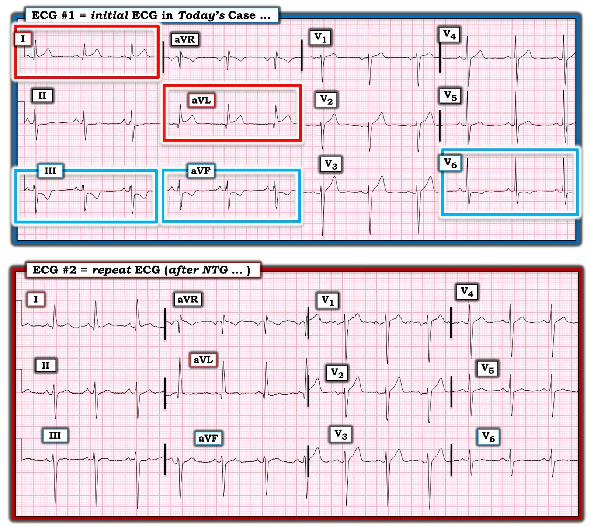